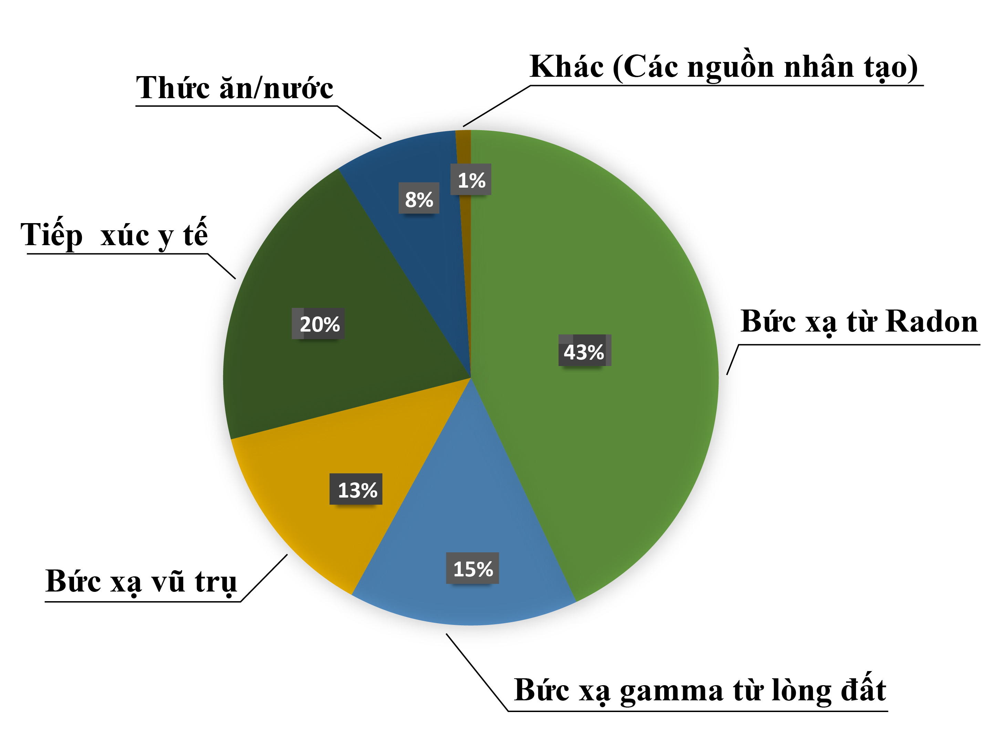
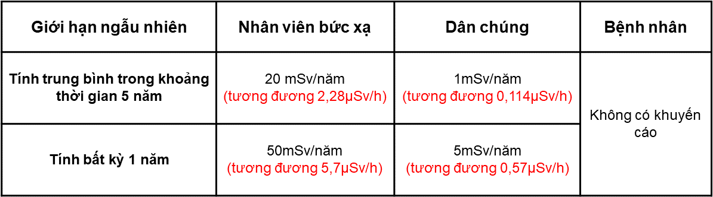
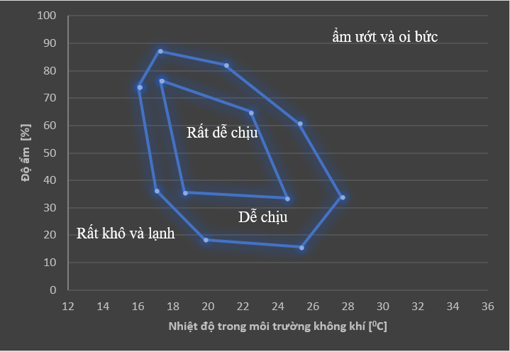
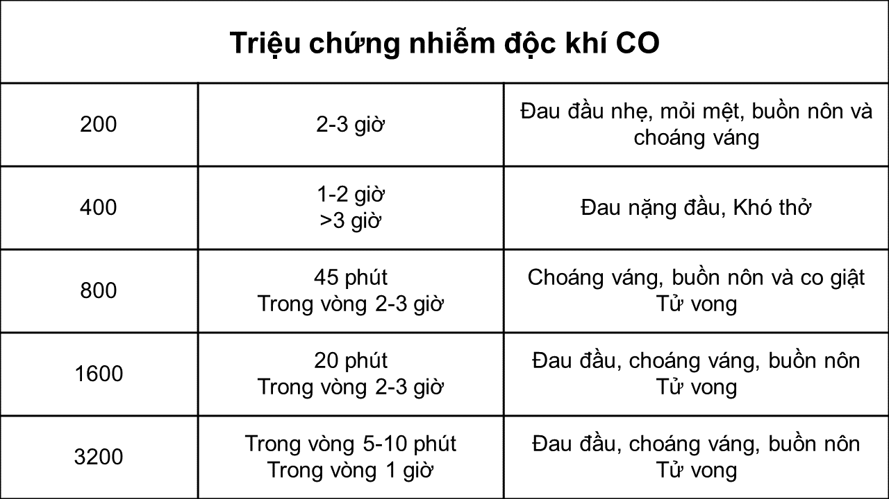
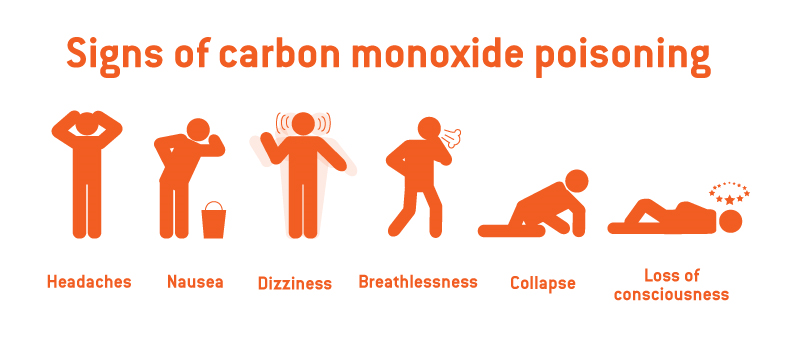
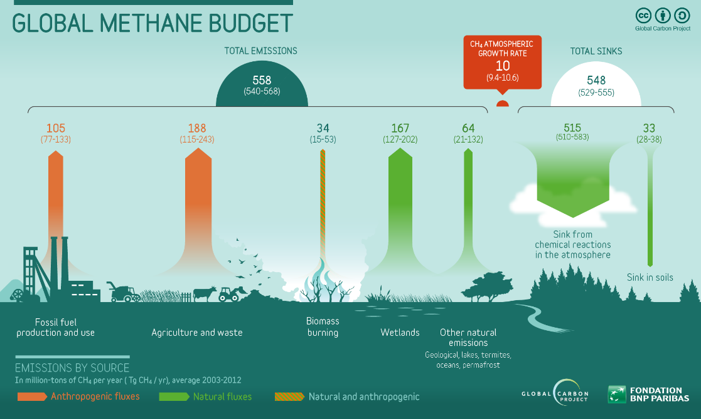

Phóng xạ môi trường
Phóng xạ môi trường tồn tại xung quanh chúng ta mọi lúc, mọi nơi. Kể từ khi trái đất được hình thành
và phát triển sự sống, mọi cá thể sống trên trái đất đều tiếp xúc với bức xạ ion hóa. Chúng ta vẫn thường
phải chịu sự chiếu xạ của các bức xạ tụ nhiên từ trái đất cũng như ngoài trái đất, đồng thời cũng bị chiếu
bởi các phóng xạ nhân tạo như các bức xạ sử dụng trong y học, các chất phóng xạ từ công nghiệp.
Phóng xạ môi trường gồm có Phóng xạ từ tự nhiên, phóng xạ nhân tạo, và bức xạ vũ trụ.
Phóng xạ tự nhiên có mặt ở khắp nơi trong môi trường, nó là một bộ phận của trái đất chúng ta; có trong không khí, đất đá, thực phẩm và ngay chính trong cơ thể con người (như K-40).
Phóng xạ nhân tạo có từ chiếu xạ trong y học, trong công nghiệp chiếu xạ, nhà máy điện hạt nhân, các vụ thử bom hạt nhân.
Phóng xạ môi trường gồm có Phóng xạ từ tự nhiên, phóng xạ nhân tạo, và bức xạ vũ trụ.
Phóng xạ tự nhiên có mặt ở khắp nơi trong môi trường, nó là một bộ phận của trái đất chúng ta; có trong không khí, đất đá, thực phẩm và ngay chính trong cơ thể con người (như K-40).
Phóng xạ nhân tạo có từ chiếu xạ trong y học, trong công nghiệp chiếu xạ, nhà máy điện hạt nhân, các vụ thử bom hạt nhân.

Hình 1: Biểu đồ tỷ lệ đóng góp của phóng xạ môi trường lên cơ thể người.
Giới hạn liều hấp thụ lên cơ thể con người (ICRP-1991)

Ủy ban Quốc tế về An toàn bức xạ ICRP (International Commission on Radiological Protection) đã khuyến nghị
rằng mọi tiếp xúc với bức xạ vượt quá giới hạn phông bình thường phải được giữ thấp ở mức hợp lý có thể đạt
được, và phải dưới giới hạn liều cá nhân.
Đối với công chúng: Giới hạn liều đối với công chúng nói chung thấp hơn đối với nhân viên bức xạ. ICRP khuyến cáo rằng giới hạn liều đối với nhân viên bức xạ không nên vượt quá 1 mSv/1 năm.
Đối với nhân viên bức xạ: theo khuyến cáo của ICRP, thì mức liều đối với nhân viên bức xạ không nên vượt quá 50 mSv/năm và liều trung bình cho 5 năm không được vượt quá 20 mSv. Nếu một phụ nữ mang thai làm việc trong điều kiện bức xạ, thì giới hạn liều nghiêm ngặt hơn cần được áp dụng là 2 mSv. Giới hạn liều được chọn để bảo đảm rằng, rủi ro nghề nghiệp đối với nhân viên bức xạ không cao hơn rủi ro nghề nghiệp trong các ngành công nghiệp khác được xem là an toàn nói chung.
Đối với bệnh nhân: ICRP không có khuyến cáo giới hạn liều đối với bệnh nhân. Ở nhiều cuộc chụp X quang, bệnh nhân phải chiếu liều cao hơn nhiều lần so với giới hạn liều cho công chúng. Trong xạ trị, liều chiếu có thể tăng gấp hàng trăm lần so với giới hạn liều đối với nhân viên bức xạ. Bởi vì liều xạ trị được dùng là để xác định bệnh và để chữa bệnh, nên hiệu quả của điều trị được xem là cần thiết hơn ngay cả khi phải dùng đến liều cao.
Đối với công chúng: Giới hạn liều đối với công chúng nói chung thấp hơn đối với nhân viên bức xạ. ICRP khuyến cáo rằng giới hạn liều đối với nhân viên bức xạ không nên vượt quá 1 mSv/1 năm.
Đối với nhân viên bức xạ: theo khuyến cáo của ICRP, thì mức liều đối với nhân viên bức xạ không nên vượt quá 50 mSv/năm và liều trung bình cho 5 năm không được vượt quá 20 mSv. Nếu một phụ nữ mang thai làm việc trong điều kiện bức xạ, thì giới hạn liều nghiêm ngặt hơn cần được áp dụng là 2 mSv. Giới hạn liều được chọn để bảo đảm rằng, rủi ro nghề nghiệp đối với nhân viên bức xạ không cao hơn rủi ro nghề nghiệp trong các ngành công nghiệp khác được xem là an toàn nói chung.
Đối với bệnh nhân: ICRP không có khuyến cáo giới hạn liều đối với bệnh nhân. Ở nhiều cuộc chụp X quang, bệnh nhân phải chiếu liều cao hơn nhiều lần so với giới hạn liều cho công chúng. Trong xạ trị, liều chiếu có thể tăng gấp hàng trăm lần so với giới hạn liều đối với nhân viên bức xạ. Bởi vì liều xạ trị được dùng là để xác định bệnh và để chữa bệnh, nên hiệu quả của điều trị được xem là cần thiết hơn ngay cả khi phải dùng đến liều cao.
Nhiệt độ - độ ẩm
Không khí ẩm chứa nhiều hơi ẩm hơn không khí lạnh, nhưng con người không thể cảm nhân được độ ẩm tuyệt đối,
họ cảm nhận độ ẩm tương đối, được tính là phần trăm hơi nước trong không khí.
Con người thường cho rằng độ ẩm tương đối 40-55% là tiện nghi. Dưới 40% sẽ cảm nhận là hanh khô, trên 55% sẽ cảm nhận là oi bức và ẩm ướt. Giống như nhiệt độ, độ ẩm cũng thay đổi liên tục trong ngày và quanh năm, và tùy vào vùng địa lý khác nhau độ ẩm không khí cũng khác nhau. Hình sau trình bày diều kiện không khí ảnh hưởng đến thích nghi của con người.
Con người thường cho rằng độ ẩm tương đối 40-55% là tiện nghi. Dưới 40% sẽ cảm nhận là hanh khô, trên 55% sẽ cảm nhận là oi bức và ẩm ướt. Giống như nhiệt độ, độ ẩm cũng thay đổi liên tục trong ngày và quanh năm, và tùy vào vùng địa lý khác nhau độ ẩm không khí cũng khác nhau. Hình sau trình bày diều kiện không khí ảnh hưởng đến thích nghi của con người.

Khí CO
Carbon monoxit CO là khí không mùi vị, có độc tính cao với sức khỏe con người và cực kỳ nguy hiểm. Việc hít
thở phải một lượng quá lớn CO sẽ dẫn tới thương tổn do giảm ôxy trong máu hay tổn thương hệ thần kinh cũng
như có thể gây tử vong. Nồng độ chỉ khoảng 0,1% carbon monoxit trong không khí cũng có thể là nguy hiểm đến
tính mạng. Vì CO là chất khí không màu, không mùi, không gây kích ứng nên con người không cảm nhận được sự
hiện diện của CO trong không khí, dẫn đến CO rất nguy hiểm đối với con người.
Khí CO có trong khói đốt nhiên liệu như xe gắn máy, xe hơi, động cơ nhỏ, bếp lò, vỉ nướng, lò sưởi,… Khí CO có thể tích tụ trong nhà dẫn đến ngộ độc đến con người hít phải.
Khí CO có trong khói đốt nhiên liệu như xe gắn máy, xe hơi, động cơ nhỏ, bếp lò, vỉ nướng, lò sưởi,… Khí CO có thể tích tụ trong nhà dẫn đến ngộ độc đến con người hít phải.

Triệu chứng nhiễm độc của người khi tiếp xúc với CO ở các nồng độ khác nhau

Khí CH4

Metan (CH4) là một loại khí gây hiệu ứng nhà kính, cùng với CO và CO2. Nó được sinh ra từ khai thác nhiên
liệu hóa thạch, từ rác thải-nông nghiệp, từ cháy rừng, từ sự phân giải kỵ khí ở đất ngập nước, ruộng lúa….
Hình trên minh họa nguồn gốc khí CH4 tạo ra.
CH4 thúc đẩy sự oxy hóa hơi nước ở tầng bình lưu. Sự gia tăng hơi nước gây hiệu ứng nhà kính mạnh hơn nhiều so với hiệu ứng trực tiếp của CH4.
Ở mật độ bình thường trong môi trường, metan không ảnh hưởng đến sức khỏe con người. Ở mật độ cực cao trong môi trường kín thì sự giảm mật độ oxy có thể dẫn đến ngạt thở.
CH4 thúc đẩy sự oxy hóa hơi nước ở tầng bình lưu. Sự gia tăng hơi nước gây hiệu ứng nhà kính mạnh hơn nhiều so với hiệu ứng trực tiếp của CH4.
Ở mật độ bình thường trong môi trường, metan không ảnh hưởng đến sức khỏe con người. Ở mật độ cực cao trong môi trường kín thì sự giảm mật độ oxy có thể dẫn đến ngạt thở.